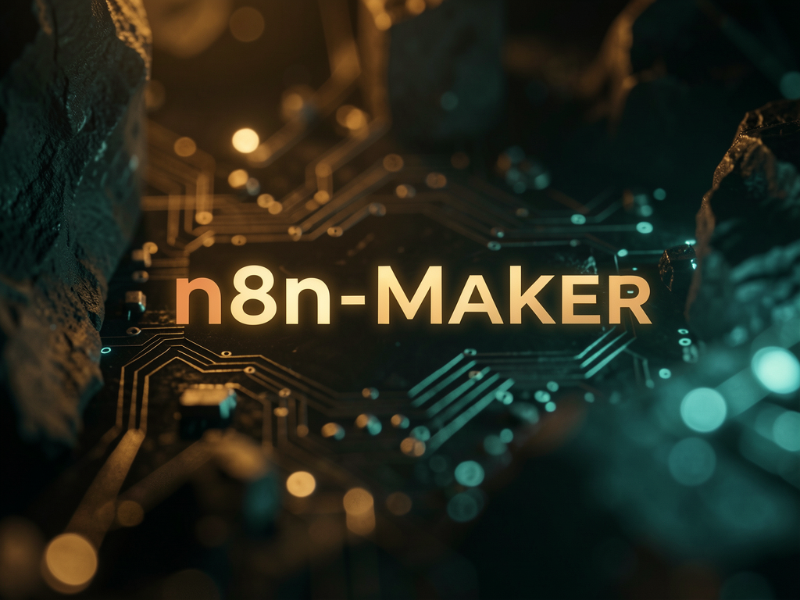

Siete skills que se cargan solas y cubren todo el ciclo: diseñar el workflow, configurar los nodes, escribir expresiones y resolver errores de validación.

Cada skill es una carpeta con un SKILL.md y archivos de referencia. Claude Code lee la descripción, decide por sí solo cuándo el tema es pertinente y solo entonces consulta el detalle que necesita: el contexto se mantiene ligero.
No invocas nada manualmente. Mencionaste webhook, expresión {{ }} o un error de validación, entra la skill adecuada.
O SKILL.md es breve; los catálogos de errores, patrones y referencias de API solo se incorporan al contexto cuando el caso lo requiere.
Con el servidor n8n-mcp conectado, puedes buscar nodes, validar la configuración y publicar workflows. Sin él, las otras seis siguen funcionando.
El orden en que entran las skills en una construcción típica. El ciclo entre validar y corregir suele dar 2–3 vueltas: es normal, no significa que algo haya salido mal.
n8n-workflow-patterns elige el patrón: webhook, API HTTP, base de datos, AI agent o programado.
node-configuration, expression-syntax y ambos code-* completan los nodos.
validation-expert lee los errores; mcp-tools-expert valida y publica en n8n.
Todas están en skills/ en el repositorio, con symlinks en .claude/skills/ — que es de donde Claude Code carga.
Los cinco patrones arquitectónicos comprobados: procesamiento de webhook, integración HTTP/API, operaciones de banco, workflow de AI agent y tareas agendadas.
Se activa al diseñar o estructurar un workflow nuevo.
Configuración según la operación: campos obligatorios, dependencias entre propiedades y qué nivel de detalle pedir en el get_node.
Se activa al configurar un node específico.
Sintaxis {{ }}, variables $json e $node, datos provenientes de webhook y el catálogo de errores clásicos.
Se activa al escribir o corregir expresiones.
Code node en JavaScript: $input/$json/$node, $helpers.httpRequest, fechas con DateTime y la elección entre los modos del nodo.
El camino recomendado para ~95% de los casos.
Code node en Python (beta): _input/_json, lo que se puede usar de la biblioteca estándar y las limitaciones reales frente a JS.
Solo cuando Python sea realmente necesario.
Interpretar y resolver errores de validación: catálogo de errores, perfiles de validación, estructura de operadores y cómo reconocer falsos positivos.
Se activa cuando un validate_* se queja.
Uso eficiente de las herramientas de MCP n8n-mcp: descubrimiento de nodos, validación de configuración, gestión de workflows y la biblioteca de ~2.700 plantillas reales.
Requiere el servidor n8n-mcp conectado.
Una carpeta por skill, con SKILL.md más los anexos: ERROR_CATALOG.md, COMMON_PATTERNS.md, DATA_ACCESS.md, FALSE_POSITIVES.md, DEPENDENCIES.md y similares.
Lo básico es solo Claude Code y el repositorio clonado. El MCP y la instancia n8n son opcionales; sin ellos pierdes la publicación automática, no el conocimiento.
Las skills usan el mecanismo nativo de skills de proyecto (.claude/skills/).
# versión instalada claude --version
Clona y abre Claude Code desde dentro de la carpeta: las skills de proyecto solo se aplican allí.
git clone https://github.com/inematds/n8n-maker cd n8n-maker && claude
Solo es necesario para la skill n8n-mcp-tools-expert buscar nodos y publicar workflows.
# comprobar los MCP conectados claude mcp list
Comandos reales. El punto principal es el paso 3: describes lo que quieres en portugués y las skills se activan solas.
Las skills viajan junto con el repo: no hay nada más que instalar.
git clone https://github.com/inematds/n8n-maker cd n8n-maker
Skills en .claude/skills/ son de proyecto: solo se cargan cuando la sesión se ejecuta allí dentro.
claude # desde dentro de ~/projetos/n8n-maker # comprueba que aparezcan: /skills → n8n-*
No invoques ninguna skill. Describe el objetivo; Claude elige el patrón y arma la estructura.
# ejemplo de solicitud "monta um workflow que recebe um webhook, valida o payload e grava no Postgres" # → n8n-workflow-patterns incorpora el patrón de webhook # → n8n-node-configuration configura Webhook, IF y Postgres
Al modificar un campo dinámico o Code node, se encargan las skills de sintaxis y de código.
# expresión en un campo del node {{ $json.body.email }} # Code node (JavaScript) const items = $input.all(); return items.map(i => ({ json: { email: i.json.body.email } }));
Espera 2–3 vueltas. La n8n-validation-expert traduce el mensaje, señala la causa y distingue un error real de un falso positivo.
# solicitud típica "valida esse workflow e corrige o que aparecer" # → errores reales: corregidos # → falsos positivos: explicados e ignorados
Con el MCP n8n-mcp conectado, la n8n-mcp-tools-expert crea y actualiza el workflow directamente en n8n.
"sobe esse workflow na minha instância do n8n"
Crea symlinks de las carpetas al directorio global de skills; así siguen versionadas aquí.
ln -s ~/projetos/n8n-maker/skills/n8n-* ~/.claude/skills/
Cómo funciona el enrutamiento en la práctica: hablas con naturalidad y aparece la skill correcta.
workflow-patterns (patrón de webhook) → node-configuration (Webhook + Slack) → expression-syntax (armar el mensaje).
$json está llegando undefined”expression-syntax muestra el acceso correcto al elemento y la diferencia entre $json, $node y datos de webhook.
code-javascript con $helpers.httpRequest y el ciclo de paginación; workflow-patterns si se convierte en un flujo propio.
validation-expert lo localiza en el catálogo de errores, corrige la estructura e indica si es un falso positivo.
El repositorio nació de skills que ya funcionaban en el perfil global; el siguiente paso es sumar ejemplos ejecutables y facilitar la instalación.
~/.claude/skills/ y se convirtieron en proyecto: contenido en skills/, symlinks en .claude/skills/, README y esta guía.